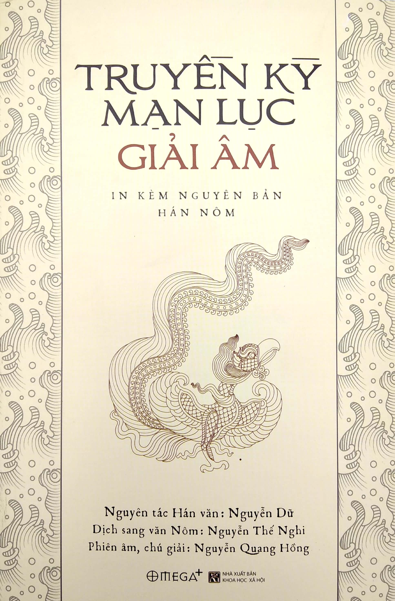

Đọc truyện ngắn Truyền Kỳ Mạn Lục

Chương I: Câu chuyện ở đền Hạng Vương
Quan Thừa chỉ Hồ Tông Thốc (1) là người hay thơ, lại giỏi lối mỉa mai giễu cợt, khoảng cuối đời Trần, phụng mệnh sang Trung Quốc, nhân đi qua đền Hạng vương có đề thơ rằng:
Bách nhị sơn hà khởi chiến phong,
Huề tương tử đệ nhập Quan Trung.
Yên tiêu Hàm Cốc châu cung lãnh,
Tuyết tán Hồng Môn ngọc đẩu không.
Nhất bại hữu thiên vong Trạch Tả,
Trùng lai vô địa đáo Giang Đông.
Kinh doanh ngũ tải thành hà sự?
Tiêu đắc khu khu táng Lỗ công.
Nghĩa là:
Nom nước trăm hai (2) nổi bụng hồng,
Đem đoàn tử đệ đến Quan Trung
Khói tan Hàm Cốc cung châu lạnh, (3)
Tuyết rã Hồng Môn đấu ngọc không (4)
Thua chạy giời xui đường Trạch Tả (5)
Quay về đất lấp nẻo Giang Đông (6)
Năm năm lăn lộn hoài công cốc
Còn được vùi trong mả Lỗ công (7).
Đề xong, ruổi ngựa trở về nhà trọ. Rượu say nằm ngủ, ông Hồ chiêm bao thấy một người đến nói với mình rằng:
- Tôi vâng chỉ của đức vua tôi, mời ngài đến chơi nói chuyện.
Hồ vội vàng sửa sang quần áo. Người ấy đưa ông đi về mé tả, đến một nơi cung điện nguy nga, quan hầu đứng sắp hàng răm rắp, Hạng vương đã ngồi chờ sẵn, bên cạnh có cái giường lưu ly, mời ông lên ngồi. Rồi Hạng vương hỏi rằng:
- Bài thơ ông đề lúc ban ngày, sao mà mỉa mai ta dữ thế! ừ thì hai câu: "Thua chạy giời xui đường Trạch Tả, Quay về đất lấp nẻo Giang Đông" kể cũng là đúng, nhưng đến hai câu "Năm năm lăn lộn hoài công cốc, Còn được vùi trong mả Lỗ công", há chẳng phải là chê bai quá lời ư? Này như Hán làm nên vạn thặng (8) ta cũng làm nên vạn thặng. Ta không diệt được Hán, Hán lại có thể phong tước cho ta được ư? Đến ngay Điền Hoành (9) là một gã trẻ con, còn không tham tước của Hán, và hổ thẹn tự sát mà chết; huống ta đường đường một vị bá vương ở nước Sở, lại tự cam nhận lễ Lỗ công hay sao? Kẻ kia làm việc ấy, chỉ là đem quàng cho ta một cái tước vị hão, để đền bù lại sự hổ thẹn khi ở Hán Trung (10) thôi đó. Ta lại xin nói để ông rõ: Ngày nhà Tần sổ mất con hươu (11), người ta nổi dậy nhao nhao, tranh nhau bắt lấy. Ta bấy giờ vì ghét người Tần mà nổi quân đánh Tần, tháo răng bừa làm giáo, thổi cơm chiêm làm lương, tôi đòi đều là quân, hào kiệt đều là tướng, phá xứ Ngô như hủy tổ kiến, lấy đất Hoài như đốt lông hồng, một trận đánh mà quân Chương Hàm (12) phải tan, hai trận đánh mà miếu Tổ Long (13) phải sụp. Đức nghĩa ban ra, nhiều nước được dựng lại, oai lệnh truyền đi, bao kẻ thuận làm tôi. Đứng đầu Chư hầu là quân nước Sở, làm chúa Tam Tần là tướng xứ Sở. Thiên hạ theo về nước Sở có thể ngồi mà sai khiến được. Nhưng rồi Sở phải chết vì Hán, há chẳng phải là bởi trời ư? Vậy thì khi trời định giúp Hán, dù kẻ thổi kèn, dệt chiếu (14) cũng đủ để thành công; khi trời định diệt Sở, dù người cất vạc, nhổ núi (15) cũng không thể nói giỏi. Phương chi Chung Ly mạnh mẽ, chẳng kém Hoài Âm (16) á Phụ (17) khôn ngoan, thực hơn Nhụ Tử (18). Nếu ta nghe lời không cố chấp, nhân thua mà tính toán, thì ruổi Ô truy bốn vó mỏi chồn, há không đủ cày lật cung đình Phong Bái, thu Bành Thành (19) những quân tản mác, há không đủ đào tung miếu xã Viêm Lưu. Nhưng chỉ vì thương lũ sinh linh, nên mới đem tấm thân tám thước đường đường, ném vào tay lũ Vương ế (20). Vậy sự hưng vong của Hán, Sở, chỉ là do ở sự may rủi của trời mà thôi, há nên lấy thành bại mà so bì ư? Nhưng đời những kẻ thích phẩm bình nhân vật, có kẻ bảo không phải giời làm mất, có kẻ bảo giời có dính dáng gì. Thi nhân mặc khách thường thường đem chuyện ta diễn vào trong thơ. Có câu thì:
Cái thế anh hùng sức nhổ núi,
Sở ca bốn mặt lệ tràn lan, (21)
Có câu thì:
Vua chẳng ra vua, tôi chẳng tôi,
Bên sông lập miếu cũng hoài thôi. (22)
Ngày chồng tháng chất, có đến hàng nghìn bài chứ không phải ít. Nhưng chỉ có hai câu của Đỗ Mục: (23)
Giang đông tử đệ nhiều tay giỏi,
Cuốn đất quay về chửa biết đâu.
Lời thơ ủy khúc trung hậu, hợp cách luật của nhà thơ, đọc lên ta còn vừa lòng đôi chút. Ngoài ra thì hầu toàn những lời phụ bạc, ta vẫn lấy làm bất bình lắm, nay tiện dịp ta nói để cho ông rõ.
Ông Hồ cười mà rằng:
- Lẽ trời việc người, cũng là đầu cuối lẫn cho nhau. Bảo mệnh ở trời, (24) Thương Trụ vì thế mà mất nước; bảo trời sinh đức, Tân Mãng vì thế mà bỏ mình. (25) Nay nhà vua bỏ việc người mà đi bàn lẽ giời, vì thế đã đến táng bại vẫn không tỉnh ngộ. Tôi bữa nay may mắn, được nhà vua vời đến tiếp kiến, muốn xin được nói thẳng không giấu giếm gì, nhà vua nghĩ thế nào?
Hạng vương nói:
- Vâng vâng, ông cứ nói.
Ông Hồ nói:
- Phàm xoay cái thế thiên hạ, ở trí chứ không phải ở sức; thu tấm lòng thiên hạ, ở nhân chứ không phải ở bạo. Nhà vua thì chỉ lấy quát thét làm oai, lấy cương cường làm đức. Chém Tống Nghĩa là một tướng mạnh, (26) vô quân đến đâu! Giết Tử Anh là người đã hàng, (27) bất võ quá lắm! Hàn Sinh vô tội mà bị luộc, (28) hình pháp trái thường; A Phòng vô cố mà bị thiêu (29), hung uy quá tệ. Cứ những việc của nhà vua làm thì được lòng người chăng? hay mất lòng người chăng?
Hạng vương nói:
- Không phải như thế. Này như cái việc Hàm Đan, lấy một nước Triệu mới dựng, chống với nước Tần sói hùm, thành bại chỉ ở trong một hơi thở, còn mất chỉ ở trong chớp mắt. Vậy mà Tống Nghĩa lần khân sợ sệt, chờ khi giặc mỏi lười, dùng dằng trùng trình, cản đường quân tiến tới. Nếu mà kế trong trướng không thi hành được, quân qua sông lại lữa lần thêm, thì dân chúng ở trong thành Triệu, sẽ lại có cái thảm họa hơn là ở Trường Bình (30) thuở trước. Vậy thì ta giết một Tống Nghĩa, mà cứu sống được tính mệnh cho trăm vạn sinh linh, có gì là quá! Vua các nước đều là chư hầu, đều có chúng dân, có xã tắc, tước thì của thiên vương phong cho, đất thì của thiên vương ban cho. Vậy mà Tần lợi dụng đất cát, ngông cuồng giáp binh, mổ Hàn thịt Triệu, hiếp Ngụy hại Yên, nam thì lừa Sở rồi bắt mà giữ lại, đông thì dối Tề để hãm cho chết đói. Nếu không lật đổ ngôi Tần và tru diệt họ Tần thì cái hờn cắn nuốt các nước, không biết ngày nào tiêu tan được. Cho nên ta giết một Tử Anh để trả mối thù diệt vong cho sáu nước, có gì là tệ. Ôm bụng trung lương là tiết lớn của kẻ làm tôi. Hàn Sinh thì không thế, khoe mẽ hợm mình, vong ân bội nghĩa, múa lưỡi để chỉ nghị quân thần, khua môi để buông lời sàm báng. Vì vậy ta đem làm thịt, để những kẻ bất trung biết mà răn sợ. Giữ thói tiết kiệm là đức tốt của người làm vua, Thủy Hoàng thì không thế, xây cung ở bên sông, mở đường ở ven núi, đắp nền cho cao bằng những hờn oán của dân, chứa kho cho đầy bằng những máu mỡ của dân. Vì vậy ta đem đốt đi để những vua đời sau biết nên dè sẻn. Nếu lại buộc tội về những điều ấy thì ta trộm lấy làm không phục.
Ông Hồ nói:
- Thế thì sáu kinh trong lửa, đốt sách Thánh nhân, thước kiếm trên sông, giết vua Nghĩa đế, những việc ấy chi mà nhẫn tâm như vậy! Sao bằng người Hán: sợ lỗi phận vua tôi thì nghe lời Đổng công làm việc nhân nghĩa, khiến nền nếp đế vương hầu rối mà lại sáng; sợ thất truyền đạo học thì về đất Khúc Phụ, bày lễ thái lao, khiến dòng nguồn thi thư hầu đứt mà lại nối. Cho nên người ta có câu nói rằng: "Hán được thiên hạ, không ở cất dùng Tiêu, Trương, mà ở việc để trở (31) của ba quân, gợi lòng trung phẫn các hào kiệt; Hán giữ thiên hạ không ở quy mô rộng lớn mà ở việc thân đến tế ở Khúc Phụ (32), mở nền nương tựa cho đời sau". Nhà vua thì so ví làm sao được với Hán vương.
Hạng vương nghẹn lời không biết nói ra sao, sắc mặt tái như tro nguội. Bên cạnh có một vị lão thần họ Phạm, tiến lên nói rằng:
- Tôi nghe, làm người ta không ngoài trời đất để mà sống, làm chính trị không ngoài cương thường để dựng nước. Bầy tôi của Đại vương đây có người tên là Cữu (33) tiết cứng như tùng, lòng bền tựa đá, sa cơ không chịu sống nhục, liều mình để được thác mà vinh; nếu không phải nhà vua biết cách chống ngự thì sao có sự tử trung ấy! Truyện (34) có nói rằng: "Vua khiến bề tôi lấy lễ, bề tôi thờ vua lấy trung"; ở Đại vương đây, chính là đã đúng hợp với câu ấy. Chứ như kẻ kia, sai Ung Sỉ giữ đất Phong thì Ung Sỉ đầu hàng, (35) sai Trần Hy (36) coi nước Triệu thì Trần Hy làm phản; đạo cương thường hỏi ai là hơn? Hậu cung của Đại vương có bà họ Ngu, mệnh nhẹ lá thu, hồn theo bóng kiếm, gửi lòng thơm ở ngọn cỏ tịch mịch, chôn hờn oán ở cánh đồng hoang vu (37), nếu không phải nhà vua biết lẽ cư xử thì sao có sự tận tiết ấy! Kinh Thi có câu rằng: "Dạy vợ mình trước, sẽ trị nhà nước"; ở Đại vương đây chính là đã xứng đáng với câu ấy. Chứ như kẻ kia, Lã Trĩ ngông ngạo mà làm việc dâm tà (38), Thích Cơ được yêu, rồi đầy thân con lợn (39); lẽ cương thường hỏi bên nào hơn? Huống chi như trái lẽ trời mà bảo sẻ chén canh, yêu con bé mà coi thường gốc nước; (40) luân thường cha con hỏi rằng để đâu? Những người nghị luận ở đời sau, chẳng so nặng nhẹ, chẳng xét phải trái, lòng không suy nghĩ, miệng chỉ quàng xiên, đối Hán thì khen ngợi chẳng tiếc lời, đối Sở thì chê bai không tiếc sức, khiến đấng Đại vương của chúng tôi trong cõi u minh cứ phải chịu những lời mỉa mai cay độc. Vậy mong những điều nhơ tiếng xấu, phiền ông gột rửa giùm cho, cũng là một việc thú trong cuộc gặp gỡ của chúng ta.
Ông Hồ thấy lời nói cũng hơi có lý, gật đầu hai ba lần, rồi ngoảnh bảo những người theo:
- Các ngươi ghi nhớ lấy.
Rồi đó canh tàn trà cạn, ông đứng dậy từ giã xin về; Hạng vương đưa chân ra đến cửa thì phương đông đã dần sáng rạng. Ông xốc áo vùng dậy, té ra là một giấc chiêm bao, bèn mua rượu và nem bày một lễ cúng ở đầu thuyền trước khi rời khỏi đấy.
Chương II: Chuyện người nghĩa phụ ở Khoái Châu
Từ Đạt ở Khoái Châu, (1) lên làm quan tại thành Đông Quan (2) thuê nhà ở cạnh cầu Đồng Xuân, láng giềng với nhà quan Thiêm thư là Phùng Lập Ngôn. Phùng giàu mà Từ nghèo; Phùng xa hoa mà Từ tiết kiệm; Phùng chuộng dễ dãi mà Từ thì giữ lễ. Lề thói hai nhà đại khái không giống nhau. Song cũng lấy nghĩa mà chơi bời đi lại với nhau rất thân, coi nhau như anh em vậy.
Phùng có người con trai là Trọng Quỳ, Từ có người con gái là Nhị Khanh, gái sắc trai tài, tuổi cũng suýt soát. Hai người thường gặp nhau trong những bữa tiệc, mến vì tài, yêu vì sắc, cũng có ý muốn kết duyên Châu Trần. (3) Cha mẹ đôi bên cũng vui lòng ưng cho, nhân chọn ngày mối lái, định kỳ cưới hỏi.
Nhị Khanh tuy hãy còn nhỏ, nhưng sau khi về nhà họ Phùng, khéo biết cư xử với họ hàng, rất hòa mục và thờ chồng rất cung thuận, người ta đều khen là người nội trợ hiền.
Trọng Quỳ lớn lên, dần sinh ra chơi bời lêu lổng; Nhị Khanh thường vẫn phải can ngăn. Chàng tuy không nghe nhưng cũng rất kính trọng. Năm chàng 20 tuổi, nhờ phụ ấm được bổ làm một chức ở phủ Kiến Hưng. Gặp khi vùng Nghệ An có giặc, triều đình xuống chiếu kén một viên quan giỏi bổ vào cai trị. Đình thần ghét Lập Ngôn tính hay nói thẳng, ý muốn làm hại, bèn hùa nhau tiến cử. Khi sắc đi phó nhậm, Phùng Lập Ngôn bảo Nhị Khanh rằng:
- Đường sá xa xăm, ta không muốn đem đàn bà con gái đi theo, vậy con nên tạm ở quê nhà. Đợi khi sông bằng nước phẳng, vợ chồng con cái sẽ lại cùng nhau tương kiến.
Trọng Quỳ thấy Nhị Khanh không đi, có ý quyến luyến không rứt. Nhị Khanh ngăn bảo rằng:
- Nay nghiêm đường vì tính nói thẳng mà bị người ta ghen ghét, không để ở lại nơi khu yếu, bề ngoài vờ tiến cử đến chốn hùng phiên, bên trong thực dồn đuổi vào chỗ tử địa. Chả lẽ đành để cha ba đào muôn dặm, lam chướng nghìn trùng, hiểm nghèo giữa đám kình nghê, cách trở trong vùng lèo mán, sớm hôm không người săn sóc, không kẻ đỡ thay? Vậy chàng nên chịu khó đi theo. Thiếp đâu dám đem mối khuê tình để lỗi bề hiếu đạo. Mặc dầu cho phấn nhạt hương phai, hồng rơi tía rụng, xin chàng đừng bận lòng đến chốn hương khuê.
Sinh không đừng được, mới bày một bữa tiệc từ biệt, rồi cùng Lập Ngôn đem người nhà đi vào phương nam.
Không ngờ lòng giời khó hiểu, việc người khôn lường, cha mẹ Nhị Khanh nối nhau tạ thế. Nàng đưa tang về Khoái Châu, chôn cất cúng tế xong rồi, đến cùng ở chung với bà cô Lưu thị.
Bấy giờ có quan tướng quân họ Bạch là cháu họ ngoại của bà Lưu thị muốn lấy Nhị Khanh làm vợ, đem tiền bạc đến khẩn cầu. Lưu thị bằng lòng, rồi nhân lúc vắng vẻ, bảo Nhị Khanh rằng:
- Nhà nước từ ngày họ Nhuận Hồ tiếm vị, ngày tháng hoang chơi, triều chính đổ nát, họa loạn sẽ xảy ra chỉ trong sớm tối; mà Phùng lang từ ngày ra đi, thấm thoắt đã sáu năm nay, tin tức không thông, mất còn chẳng rõ. Lỡ ra gặp lúc rồng tranh hổ chọi, phải khi bướm dại ong cuồng, Tra Lợi mắc vào tay (4), áp Nha không sẵn mặt (5), chỉ e Chương Đài tơ liễu, (6) trôi bay đi đến tận phương nào. Chi bằng bạn lành kén lựa, duyên mới vương xe, lấp những lời giăng gió cợt trêu, nương dưới bóng tùng quân cao cả. Tội gì mà bơ vơ trơ trọi, sống cái đời sương phụ buồn tênh.
Nhị Khanh nghe nói sợ hãi, mất ngủ quên ăn đến hàng tháng. Lưu thị tuy biết chí nàng không chuyển động, nhưng cố định lấy lễ nghi để cưỡng ép, hôn kỳ đã rắp sẵn sàng.
Nhị Khanh một hôm bảo người bõ già rằng:
- Chú là người đầy tớ cũ của nhà ta, há không nghĩ đến sự đền đáp ơn đức của người xưa ư?
Bõ già nói:
- Tùy ý mợ muốn sai bảo gì tôi xin hết lòng.
Nhị Khanh nói:
- Ta sở dĩ nhịn nhục mà sống là vì nghĩ Phùng lang hãy còn; nếu chàng không còn thì ta đã liều mình chứ quyết không mặc áo xiêm của chồng để đi làm đẹp với người khác. Chú có thể vì ta chịu khó lặn lội vào xứ Nghệ hỏi thăm tin tức cho ta không?
Người bõ già vâng lời ra đi. Bấy giờ binh lửa rối ren, đường sá hiểm trở, hắn phải lận đận đến hàng tuần mới vào được đến Nghệ An. Hắn đi hỏi thăm, biết tin Phùng Lập Ngôn đã mất được mấy năm rồi, lại vì con trai hư, nên gia tư đã sạch sành sanh, đáng phàn nàn quá!
Người bõ già ghé thuyền lên bờ, vừa vào trong chợ liền gặp ngay Phùng Sinh. Sinh đưa về chỗ ở thì thấy một chiếc giường xiêu, bốn bề vách trống, trừ có mấy thứ như bàn cờ, hũ rượu, chim mồi, chó săn, không còn cái gì đáng giá. Sinh bảo người bõ già rằng:
-Quan nhà không may, thất lộc đã bốn năm nay rồi. Ta vì binh qua nghẽn trở, muốn về không được. Tuy ở chốn quê người đất khách, nhưng hồn mộng không đêm nào không ở bên mình Nhị Khanh.
Bèn chọn ngày lên đường về quê. Đến nhà, vợ chồng cũng trông nhau mà khóc. Đêm hôm ấy buồng loan chung gối, Sinh ngâm một bài thơ rằng:
ức tích bình sinh nhật,
Tăng hài khế hợp nhân
Cảm quân tình thái hậu
Tiếu ngã mệnh chung truân.
Biệt quệ phân huề tảo,
Trường đình khuyến ẩm tần.
Y y sầu lĩnh kiệu,
Nhiễu nhiễu cách phong trần.
Cộng ước nhân thiên lý,
Tương vương nguyệt bán luân.
Xâm tầm nhàn lục tải,
Linh tạ trướng song thân.
Phạ thụy Hoành sơn hiểu
Hành ca Diễn thủy tân.
Đăng lâu Vương Xán lệ,
Xách cú Đỗ Lăng cân.
Trúc thạch nan y tục
Cầm tôn bất liệu bần.
Tha hương lao ký mục,
Cố quốc trọng thương thần.
Phóng lãng phi ngô sự,
Yêm lưu bệnh thử thân.
Ninh tri Bồng Đảo khách,
Dao dạt Cẩm Giang lân.
Thái Thạch trùng di trạo,
Hoàng Cô lưỡng vấn tân.
Kỷ niên Vu Giáp mộng,
Nhất đán Vũ Lăng xuân.
Hồ điệp giao tình cựu,
Uyên ương biến thái tân.
Khinh huyên Đường Quắc quốc,
Mỹ mạn Tống Đông lân.
Lục ám oanh thanh sáp,
Hồng hy yến tử sân.
Hiệp du kim Đỗ Mục,
Kỳ ngộ cổ Lưu Thần.
Ngàm vịnh liêu tùy hứng,
Phong lưu khẳng nhượng nhân.
Hội ưng truyền thắng sự,
Mệnh bút ký Chu Tần.
Nghĩa là:
Nhớ từ năm hãy ngây thơ
Đôi ta sớm đã xe dây Tấn Tần
Tình em thắm đượm vô ngần
Số anh riêng lắm gian truân cũng kỳ.
Chia tay một sớm ra đi,
Trường đình chén rượu phân ly rước mời.
Sầu treo đỉnh núi chơi vơi,
Mịt mù gió bụi cách vời xa xăm.
Bắc Nam nghìn dặm âm thầm,
Trăng cài nửa mảnh đăm đăm bên trời.
Sáu năm vùn vụt đưa thoi,
Thông già huyên héo ngậm ngùi nhớ thương.
Từng khi ngủ dưới Đèo Ngang,
Từng khi bến Diễn (7) ngâm vang điệu sầu.
Lệ tuôn, Vương Xán lên lầu, (8)
Sầu ôm, Đỗ Phủ ngâm câu cảm hoài, (9)
Rượu đàn trúc đá ham chơi,
Càng nghèo càng cảm thấy đời bê tha.
Mắt mòn trông ngóng quê nhà,
Lòng đau nghĩ nỗi phương xa lạc loài.
Người mà đến thế thì thôi,
Đời phiên lãng chỉ là đời bỏ đi.
Hay đâu tin đến bất kỳ, (10)
Người tiên còn vẫn yêu vì chưa thôi.
Bến tiên khách lại trùng lai,
Mộng say Đỉnh Giáp, xuân tươi Nguồn Đào. (11)
Uyên bơi bướm giỡn xôn xao,
Vẻ nào chẳng đượm, nét vào chẳng ưa!
Đầy vườn lục rậm hồng thưa,
Con oanh cái én ơ hờ nhớ xuân.
Duyên may Đỗ Mục, Lưu Thần,
Thú Phong Lưu dễ nhượng phần cho ai.
Việc nên truyền lại lâu dài,
Bút hoa mượn thảo mấy lời vân vân.
Hai người vì xa cách nhau lâu, nên nay tình ái bội phần nồng đượm, sự vui sướng không còn phải nói.
Song Phùng Sinh vì quen thân phóng lãng, thuộc tính chơi bời, về nhà ít lâu rồi nết cũ lại đâu đóng đấy, hằng ngày cùng người lái buôn là Đỗ Tam bê tha lêu lổng. Sinh thì thích Đỗ có tiền nhiều. Đỗ thì ham Sinh có vợ đẹp. Những khi uống rượu với nhau rồi đánh bạc, Đỗ thường lấy lợi nhử Sinh. Sinh đánh lần nào cũng được, thấy kiếm tiền dễ như thò tay vào túi mình lấy đồ vật vậy. Nhị Khanh vẫn răn bảo rằng:
- Những người lái buôn phần nhiều là giảo quyệt, đừng nên chơi thân với họ; ban đầu tuy họ thả cho mình được, nhưng rồi họ sẽ vét hết của mình cho mà xem.
Sinh không nghe. Một hôm Sinh cùng các bè bạn họp nhau đánh tứ sắc. Đỗ bỏ ra trăm vạn đồng tiền để đánh và đòi Sinh đánh bằng Nhị Khanh. Trọng Quỳ quen mui vẫn được luôn, chẳng suy nghĩ gì, liền bằng lòng cách ấy. Giấy giao kèo viết xong rồi vừa uống rượu vừa gieo quân. Trọng Quỳ gieo ba lần đều thua cả ba, sắc mặt tái mét; cử tọa cũng đều ngơ ngác buồn rầu hộ.
Trọng Quỳ phải cho gọi Nhị Khanh đến, bảo rõ thực tình, đưa tờ giao kèo cho xem và yên ủi rằng:
- Tôi vì nỗi nghèo nó bó buộc, để lụy đến nàng. Việc đã đến thế này, hối lại cũng không kịp nữa. Thôi thì bi hoan tán tụ cũng là việc thường của người ta. Nàng nên tạm về với người mới, khéo chiều chuộng hắn, rồi bất nhật tôi sẽ đem tiền đến chuộc.
Nàng liệu cơ không thể thoát khỏi, giả vờ nói tử tế rằng:
- Bỏ nghèo theo giầu, thiếp lẽ đâu từ chối. Số giời xếp đặt, há chẳng là tiền định hay sao! Nếu chồng mới không nỡ rẻ bỏ, còn đoái thu đến cái dung nhan tàn tạ này, thiếp xin sửa túi nâng khăn, hết lòng hầu hạ như đã đối với chàng xưa nay. Nhưng xin cho uống một chén rượu, mượn làm một chén tiễn biệt và cho về từ giã các con một chút.
Đỗ cả mừng, rót đầy một chén rượu xà cừ đưa mời nàng uống. Uống xong, nàng về nhà ôm lấy hai con, vỗ vào lưng mà bảo rằng:
- Cha con bạc tình, mẹ đau buồn lắm. Biệt ly là việc thường thiên hạ, một cái chết với mẹ có khó khăn gì. Nhưng mẹ chỉ nghĩ thương các con mà thôi.
Nói xong, lấy đoạn dây tơ thắt cổ mà chết.
Đỗ thấy mãi nàng không đến, lấy làm lạ, sai người đến giục, té ra nàng đã chết rồi. Trọng Quỳ hối hận vô cùng, sắm đồ liệm táng tử tế rồi làm một bài văn tế rằng:
Hỡi ơi nương tử!
Khuê nghi đáng bậc,
Hiền đức vẹn mười.
Tinh thần nhã đạm,
Dáng điệu xinh tươi.
Khi về với ta,
Vợ chồng thân thiết.
Ai biết giữa đường,
Phút nên ly biệt.
Cha làm quan xa,
Ta theo hầu hạ.
Trải sáu năm dư,
Bặt tin nhạn cá.
Buồng xuân trướng lạnh.
Hạc oán vượn sầu.
Than ôi đường trước,
Gieo neo đến đâu!
Chân giời góc bể,
Nệm khách lẻ loi.
Tin nhà chợt đến,
Ngựa về quất roi,
Sắt cầm dìu dặt,
Lại gắn keo loan.
Vừa vui sum họp,
Phút bỗng lìa tan.
Ta sao bạc quá!
Nàng đáng thương thay!
Nói năng gì nữa,
Đã đến nỗi này.
Hoa bay trước viện,
Quế rụng giữa trời.
Phù dung ủ rũ,
Dương liễu tả tơi.
Phong cảnh còn đây,
Người đã xa chơi.
Lấy gì độ em?
Một lễ lên chùa.
Lấy gì khuây em?
Duyên sau đền bù.
Non mòn bể cạn,
Hối hận khôn nguôi.
Hỡi ôi nương tử,
Hâm hưởng lễ này. (13)
Trọng Quỳ đã góa vợ, rất ăn năn tội lỗi của mình, song sinh kế ngày một cùng quẫn, ăn bữa sớm lo bữa tối, phải đi vay quanh của mọi người làng xóm. Nhân nghĩ có một người bạn cũ, hiện làm quan ở Quy Hóa, (14) bèn tìm đến để mong nhờ vả. Dọc đường buồn ngủ, chàng nằm ghé xuống ngủ ở gốc cây bàng, bỗng nghe trên không có tiếng gọi rằng:
"Có phải Phùng lang đấy không? Nếu còn nghĩ đến tình xưa thì ngày ấy tháng ấy xin đến chờ thiếp ở cửa đền Trưng Vương (15). Ân tình thiết tha, đừng coi là âm dương cách trở".
Sinh lấy làm lạ tiếng giống như tiếng Nhị Khanh, mở mắt ra nhìn thì chỉ thấy trên trời một đám mây đen bay về tây bắc. Sinh tuy rất lấy làm ngờ nhưng cũng muốn thử xem ra sao, bèn đúng hẹn đến trước đền ấy. Song đến nơi chỉ thấy bóng tà rọi cửa, rêu biếc đầy sân, năm ba tiếng quạ kêu ở trên cành cây xao xác. Sinh buồn rầu toan về thì mặt trời đã lặn, bèn ngả mình nằm ở một tấm ván nát trên một cái cầu. Khoảng cuối canh ba, bỗng nghe thấy tiếng khóc nức nở từ xa rồi gần; khi thấy tiếng khóc chỉ còn cách mình độ nửa trượng, nhìn kỹ thì người khóc chính là Nhị Khanh. Nàng bảo với Sinh rằng:
- Đa tạ ơn chàng, từ xa lặn lội tới đây, biết lấy gì để tặng chàng được!
Trọng Quỳ chỉ tự nhận tội lỗi của mình; nhân hỏi đầu đuôi, Nhị Khanh nói:
- Thiếp sau khi mất đi, Thượng đế thương là oan uổng bèn ra ân chỉ, hiện thiếp được lệ thuộc vào tòa đền này, coi giữ về những sớ văn tấu đối, không lúc nào nhàn rỗi để thăm nhau được. Bữa nọ nhân đi làm mưa, chợt trông thấy chàng nên mới gọi; nếu không thì nghìn thu dằng dặc, chẳng biết đến bao giờ được gặp gỡ nhau.
Trọng Quỳ nói:
- Sao em đến chậm thế!
Nhị Khanh nói:
- Vừa rồi thiếp nhân theo xe mây, lên có việc ở nơi Đế sở. Vì cớ có chàng nên thiếp đã phải bẩm xin về trước đấy; thành ra cũng sai hẹn với chàng một chút.
Bèn dắt tay nhau đi nằm, cùng nhau chuyện trò thủ thỉ. Khi nói đến việc hiện thời, Nhị Khanh chau mày:
- Thiếp thường theo chầu tả hữu Đức Bà ở đây, được trộm nghe chư tiên nói chuyện với nhau, bảo Hồ triều sẽ hết vào năm Binh tuất, (16) binh cách nổi lớn, số người bị giết tróc đến chừng hơn 20 vạn, ấy là chưa kể số bị bắt cướp đi. Nếu không phải người giồng cây đức đã sâu thì chỉ e ngọc đá đều bị cháy cả. Bấy giờ có một vị chân nhân họ Lê, từ miền tây nam xuất hiện; chàng nên khuyên hai con bền chí đi theo vị ấy, thiếp dù chết cũng không nát.
Trời gần sáng, Nhị Khanh vội dậy để cáo biệt, vừa đi vừa ngoảnh đầu nhìn lại, rồi thoắt chốc thì biến đi mất.
Trọng Quỳ bèn không lấy ai nữa, chăm chỉ nuôi hai con cho nên người. Đến khi vua Lê Thái Tổ tuốt gươm đứng dậy ở Lam Sơn, hai người con trai đều đi theo, trải làm đến chức Nhập thị nội. Đến nay ở Khoái Châu hiện còn con cháu.
Lời bình:
Than ôi, người con gái có ba đạo theo, theo chồng là một. Nàng Nhị Khanh chết, có quả là đã theo chồng không? Thưa rằng không. Đời xưa bảo theo, là theo chính nghĩa chứ không theo tà dục. Chết hợp với nghĩa, có hại gì cho cái đạo theo. Theo nghĩa tức là theo chồng đó. Có người vợ như thế mà để cho phải hàm oan. Trọng Quỳ thật là tuồng chó lợn. Muốn tề được nhà, phải trước tự sửa mình lấy chính, khiến cho không thẹn với vợ con, ấy là không thẹn với trời đất.
Chú thích:
(1) Khoái Châu: tên huyện, nay thuộc tỉnh Hưng Yên.
(2) Đông Quan: tên gọi Thăng Long dưới thời thuộc Minh.
(3) Duyên Châu Trần: Trung Quốc thời cổ ở huyện Phong thuộc Từ Châu có thôn Châu Trần. Trong thôn chỉ có hai họ Châu Trần đời đời kết hôn với nhau, vì thế trong văn chương Châu Trần thành điển cố để nói về chuyện hôn nhân.
(4) Tra lợi: Hàn Hoành có tài thị phú, làm quan dưới thời vua Đức Tông nhà Đường. Thủa hàn vi có người hiệp sĩ là Lý Sinh đem vợ lẽ yêu và đẹp là Liễu Thị tặng cho, lại giúp cho một số tiền lớn. Sau gặp loạn vợ chồng mỗi người mỗi nơi, Liễu Thị giữ tiết với chồng cắt tóc đi tu ở chùa Pháp Linh. Khi hết loạn, Hoành thuê người đi tìm, có bài thơ rằng: "Chương đài liễu! Tích nhật thanh thanh Kim tại Phủ? Túng sử trường điền tự cựu thùy, Dã ưng phan thiết tha nhân thủ! Nghĩa là: Chương đài liễu xanh xanh ngày trước, Nay còn chăng tha thướt ỏe oai? Ví còn tha thướt cành dài, Bẻ vin chắc đã tay ai khỏi nào! Liễu được thơ cũng làm một bài đáp lại. Nhưng khi Hàn về thì Liễu đã bị tướng Phiên là Sa Tra Lợi bắt đi. Hiệp khách Hứa Tuấn thương Hoành đột nhập vào phủ tướng Phiên cướp được Liễu Thị đem về trả cho Hoành. Hai người lại được đoàn viên.
Chương III: Chuyện cây Gạo
Trình Trung Ngộ là một chàng trai đẹp ở đất Bắc Hà, nhà rất giàu, thuê thuyền xuống vùng nam buôn bán. Chàng thường đỗ thuyền ở dưới cầu Liễu Khê rồi đi lại vào chợ Nam Xang (1). Dọc đường, hay gặp một người con gái xinh đẹp, từ Đông thôn đi ra, đằng sau có một ả thị nữ theo hầu. Chàng liếc mắt trông, thấy là một giai nhân tuyệt sắc. Song đất lạ quê người, biết đâu dò hỏi, chỉ mang một mối tình u uất trong lòng. Một hôm khác, chàng cũng gặp lại, muốn kiếm một lời nói kín đáo để thử khêu gợi, nhưng người con gái đã xốc xiêm rảo bước, và bảo với con hầu gái:
- Ta lâu nay rượu xuân quá chén, mê mệt nằm dài, hầu nửa năm trời, không lên chơi cầu Liễu Khê lần nào cả, chẳng biết giờ phong cảnh ra sao. Đêm nay nên thăm qua cảnh cũ, để được khuây giải chút tình u uất ở trong lòng, vậy em có đi theo ta không?
Con hầu vâng lời.
Trung Ngộ nghe lỏm lấy làm mừng lắm. Tối hôm ấy, chàng đến bên cầu chờ sẵn. Đêm khuya người vắng, quả thấy người con gái cùng ả thị nữ mang theo đến một cây hồ cầm, đi tới đầu cầu, thở dài mà nói rằng:
- Nước non vẫn nước non nhà, cảnh còn như cũ người đà khác xưa, làm sao khỏi cảm động bùi ngùi cho được!
Bèn ngồi tựa vào bức lan can trên cầu, ôm đàn gẩy mấy bài Nam cung, mấy điệu Thu tứ. Một lúc nàng bỏ đàn đứng dậy nói rằng:
- Giải niềm u uất, muốn mượn tiếng đàn; song điệu cao ý xa, đời làm gì có kẻ tri âm hiểu được cho mình, chẳng bằng về cho sớm còn hơn.
Trung Ngộ liền bước rảo tới trước mặt nàng, vái chào mà rằng:
- Chính tôi là người tri âm mà nương tử đã không biết đấy.
Người con gái giật mình nói:
- Vậy ra chàng cũng ở đây ư? Thiếp đã từng nhiều lần được chàng đoái tới, ơn ấy thật vẫn ghi lòng. Chỉ vì ở đường sá vội vàng, không tiện tỏ bày chung khúc. Giờ nhân đêm vắng, dạo bước nhàn du, không ngờ chàng lại đã đến trước ở đây. Nếu không phải duyên trời, sao lại có sự gặp gỡ may mắn như vậy. Song hạt châu hạt ngọc ở bên, thiếp chẳng khỏi tự xét thấy mình nhơ bẩn, thực thấy làm e thẹn vô cùng.
Chàng hỏi họ tên và nhà cửa. Nàng chau mày nói:
- Thiếp họ Nhị tên Khanh, là cháu gái của ông cụ Hối, một nhà danh giá trong làng. Song thân mất sớm, cảnh nhà đơn hàn. Mới đây bị người chồng ruồng bỏ, thiếp phải dời ra ở bên ngoài lũy làng. Nghĩ đời người ta, thật chẳng khác gì giấc chiêm bao. Chi bằng trời để sống ngày nào, nên tìm lấy những thú vui. Kẻo một sớm chết đi, sẽ thành người của suối vàng, dù có muốn tìm cuộc hoan lạc ái ân, cũng không thể được nữa.
Hai người bèn đưa nhau xuống dưới thuyền, người con gái sẽ bảo chàng rằng:
- Thân tàn một mảnh, cách với chết cũng chẳng bao xa. Ngày tháng quạnh hiu, không người săn sóc. Nay dám mong quân tử quạt hơi dương vào hang tối, thả khí nóng tới mầm khô, khiến cho tía rụng hồng rơi, được trộm bén xuân quang đôi chút, đời này của thiếp như thế sẽ không phải phàn nàn gì nữa.
Bèn cùng nhau ân ái hết sức thỏa mãn. Nàng có làm hai bài thơ để ghi cuộc hoan lạc như sau:
I
Cùng diêm cửu khốn ngọ miên trì,
Tu đối tân lang ngữ biệt ly.
Ngọc duẩn chỉnh tà châu xuyến tử,
Hương la thoát hoán tú hài nhi.
Mộng tàn bán chẩm mê hồ điệp,
Xuân tận tam canh oán tử quy.
Thử khứ vị thù đồng huyệt ước,
Hảo tương nhất tử vị tâm tri.
Nghĩa là:
Giấc xuân mê mệt chốn hoang liêu,
Bỗng sượng sùng thay cuộc ấp yêu.
Măng ngọc (2) vuốt ve nghiêng xuyến trạm,
Dải là cởi tháo trút hài thêu
Mộng tân gối bướm bâng khuâng lạc,
Xuân hết cành quyên khắc khoải kêu.
Đồng huyệt chưa tròn nguyền ước ấy,
Vì nhau một thác sẵn xin liều.
II
Giai kỳ nhẫn phụ thử lương tiêu
Túy bão ngân tranh bát phục khiêu...
Ngọc yến nhiệm dung trâm trụy kế,
Kim thuyền kỳ phạ thúc tiêm yêu.
Yên thư đường ngạc hồng do thấp,
Hãn thối mai trang bạch vị tiêu.
Tảo vãn kết thành loan phượng hữu,
Phong thần nguyệt tịch nhiệm chiêu yêu.
Nghĩa là:
Đêm đẹp này đâu nỡ bỏ hoài,
Ôm tranh nhẹ bấm một đôi bài.
Đầu cài én ngọc (3) hình nghiêng chếch,
Lưng thắt ve vàng (4) dáng ỏe oai.
Đường (5) lúc nở rồi hồng đượm ướt,
Mai khi rã hết trắng chưa phai.
Phượng loan sớm kết nên đôi lứa,
Gió sớm giăng khuya thỏa cợt cười.
Trình vốn là lái buôn, biết ít chữ nghĩa nên nàng giải nghĩa rõ ràng cho hiểu. Trung Ngộ rất khen ngợi mà rằng:
- Văn tài của nàng, không kém gì Dị An (6) ngày xưa.
Nàng cười mà rằng:
- Người ta sinh ở đời, cốt được thỏa chí, chứ văn chương thời có làm gì, chẳng qua rồi cũng nắm đất vàng là hết chuyện. Đời trước những người hay chữ như Ban Cơ, Sái Nữ (7) nay còn gì nữa đâu. Sao bằng ngay trước mắt, tìm thú vui say, để khỏi phụ mất một thời xuân tươi tốt.
Trời gần sáng, nàng từ biệt ra về. Từ đấy đêm nào họ cũng đến với nhau. Trải hơn một tháng, bọn bạn buôn có người biết chuyện bảo với Trung Ngộ rằng:
- Bác ở chỗ đất khách quê người, nên biết giữ mình thận trọng, xa lánh những sự hiềm nghi. Chớ nên giở nết gió trăng quyến phường hoa liễu. Như người con gái ấy chẳng tường duyên do gốc gác, nếu không là cô ả nũng nịu ở chốn buồng thêu, thì tất cũng dì bé yêu chiều ở nơi gác gấm. Nay bác cứ như vậy, lỡ một sớm cơ sự khó giấu, thanh tích lộ ra, trên thì bị hình pháp lôi thôi, dưới không có họ hàng cứu giúp, bấy giờ thì bác tính thế nào. Chi bằng đã trót gian díu thì nên tìm đến gốc tích nhà cửa, rồi hoặc ruồng bỏ như Xương Lê với nàng Liễu Chi (8) hoặc đèo bòng, như Lý Tĩnh với nàng Hồng Phất (9), thế mới là kế vạn toàn được.
Trung Ngộ khen phải, rồi một hôm chàng bảo với nàng:
- Tôi vốn là một người viễn khách, tình cờ kết mối lương duyên, nhưng đối với giai nhân, cửa nhà chưa rõ, tung tích không tường, trong bụng rất lấy làm áy náy.
Nàng nói:
- Nhà thiếp vốn không phải xa xôi là mấy. Nhưng nghĩ chúng mình gặp gỡ, chẳng qua là một cuộc riêng tây. Chỉ thuyền quyên ghen ghét, tai mắt nghi ngờ, đánh vịt mà kinh uyên, đốt lan mà héo huệ. Cho nên thà mang sao mà đến, đội nguyệt mà về, khỏi để mối lo cho lang quân đó thôi.
Song Trung Ngộ cố nài; nàng cười mà rằng:
- Chỉ vì nhà thiếp xấu xa, nên hổ thẹn mà muốn giấu giếm. Nhưng nay chàng đã cố muốn biết, vâng thì thiếp xin đưa về.
Rồi đó canh ba, đêm hôm ấy, nhân lúc đêm đen trời tối, hai người cùng đi đến Đông thôn. Khi đến một chỗ, chung quanh có bức hàng rào bằng gióng tre, thỉnh thoảng chen lẫn vào vài khóm lau khô, trong có túp nhà gianh nhỏ lụp sụp, dây bìm leo đầy lên vách và lên mái, nàng trỏ bảo chàng rằng:
- Đây, nhà của thiếp đây, cứ đẩy cửa vào ngồi chơi để thiếp đi kiếm cái lửa.
Trình cúi đầu qua dưới mái gianh, vào tạm ngồi ở chỗ bờ cửa. Thỉnh thoảng có cơn gió thổi, chàng thoáng thấy một mùi tanh thối khó chịu. Đương kinh ngạc không biết mùi gì, bỗng trong nhà có bóng đèn sáng. Chàng trông vào, thấy ở gian bên phía tả kê một chiếc giường mây nhỏ, trên giường để một cỗ áo quan sơn son, trên quan phủ một tấm the hồng, dùng ngân sa đề vào mấy chữ "Linh cữu của Nhị Khanh". Cạnh cữu có người con gái nặn bằng đất tay ôm cây hồ cầm đứng hầu.
Trung Ngộ thấy vậy, sởn gai, dựng tóc, tất tả nhảy choàng ra khỏi cái nhà ấy. Song chàng vừa chạy thì người con gái đã cản đường mà bảo:
- Chàng đã từ xa lại đây, quyết không có lý nào còn trở về nữa. Phương chi trong bài thơ bữa nọ, thiếp chả đã từng lấy cái chết mà hẹn hò nhau. Xin sớm theo nhau đi, cho được thỏa nguyền đồng huyệt. Nằm vò võ một mình như vậy, lẽ đâu nay thiếp lại để cho chàng về.
Nói rồi nàng sấn lại nắm vạt áo chàng. Nhưng may vạt áo cũ bở, chàng giật rách mà chạy được thoát; về đến cầu Liễu Khê, hầu như kẻ mất hồn không nói được nữa.
Sáng hôm sau nhân đến Đông thôn hỏi thăm, quả có người cháu gái của ông cụ Hối, mới 20 tuổi, chết đã nửa năm, hiện quàn ở ngoài đồng ngay bên cạnh làng. Từ đấy Trung Ngộ sinh ra ốm nặng. Còn Nhị Khanh cũng thường qua lại, có lúc đứng trên bãi sông gọi eo éo, có lúc đến bên cửa sổ nói thì thào. Trung Ngộ cũng vẫn thường ứng đáp với nàng và muốn vùng dậy để đi theo. Người trong thuyền phải lấy dây thừng trói lại thì chàng mắng:
- Chỗ vợ ta ở có lâu đài lộng lẫy, có hương hoa ngạt ngào, ta phải đi theo chứ không thể luẩn quẩn trong chốn bụi hồng này được; can dự gì đến các người mà dám đem dây trói buộc ta thế này.
Một đêm, người trong thuyền ngủ say, đến sáng thức dậy thì thấy mất Trung Ngộ. Họ vội đến Đông thôn tìm, thấy chàng đã nằm ôm quan tài mà chết, bèn phải thu liệm chôn ngay ở đấy. Từ đó về sau, phàm những đêm tối trời, người ta thường thấy hai người dắt tay nhau đi dạo, khi thì hát, khi thì khóc. Hai người thường bắt người ta phải khấn cầu lễ bái, hễ hơi không được như ý thì làm tai làm vạ. Người làng đấy không thể chịu được mọi nỗi khổ hại, họ bèn đào mả phá quan tài của chàng, rồi cùng cả hài cốt của nàng, vứt bỏ xuống sông cho trôi theo dòng nước.
Trên bờ sông ấy có một cái chùa, chùa có cây gạo rất cổ tương truyền là đã sống được hơn trăm năm. Linh hồn của hai người bèn nương tựa vào cây gạo ấy làm yêu làm quái, hễ ai động đến cành lá cây gạo thì dao gẫy rìu mẻ, không thể nào đẵn phạt được.
Trong năm Canh Ngọ (1330) niên hiệu Khai Hựu nhà Trần, có vị đạo nhân một đêm vào nằm ngủ trong cái chùa ấy. Giữa lúc sông quạnh trăng mờ, bốn bề im lặng, đạo nhân thấy một đôi trai gái, thân thể lõa lồ mà cùng nhau cười đùa nô giỡn, một lát, đến gõ thình lình gọi hỏi trong chùa. Đạo nhân cho là đôi trai gái lẳng lơ đêm trăng dắt nhau đi chơi, khinh bỉ cái phẩm cách của họ, nên cứ đóng cửa nằm im, không thèm đánh tiếng. Sáng hôm sau, đạo nhân đem sự việc trông thấy thuật chuyện với một ông già trong thôn mà phàn nàn sao dân phong tồi tệ như vậy. Ông già nói.
- Ngài không biết, đó là giống yêu quỷ, chúng đến ở nay trên cây gạo đã mấy năm nay; ước sao có thanh kiếm trừ tà, để trừ cho dân chúng tôi giống yêu quỷ ấy.
Đạo nhân trầm ngâm một lúc lâu rồi nói.
- Ta vốn lấy việc cứu giúp mọi người làm nhiệm vụ, cái việc mắt ta trông thấy, nếu chẳng đem pháp thủ ra tức là thấy người chết đuối mà không cứu vớt.
Rồi đạo nhân vời họp người làng, lập một đàn tràng cúng tế, viết ba đạo bùa, một đạo đóng vào cây gạo, một đạo thả chìm xuống sông, còn một đạo đốt ở giữa trời, đoạn quát to lên rằng:
- Những tên dâm quỷ, càn rỡ đã lâu, nhờ các thần linh, trừ loài nhơ bẩn, phép không chậm trễ, hỏa tốc phụng hành.
Một lúc, mây gió nổi lên đùng đùng, người đứng cách mấy thước không trông thấy nhau, dưới sông thì sóng tung cuồn cuộn vang trời động đất. Sau một hồi, gió lặng mây quang, thấy cây gạo đã bị nhổ bật, cành cây gẫy nát và bị tước như tước dây vậy. Kế nghe thấy trong không có tiếng roi vọt và tiếng kêu khóc. Mọi người ngẩng lên trông có sáu bảy trăm lính đầu trâu gông trói hai người mà dẫn đi.
Người làng đem rất nhiều tiền của để tạ ơn vị đạo nhân, nhưng đạo nhân phất áo đi vào non sâu, không lấy một tí gì cả.